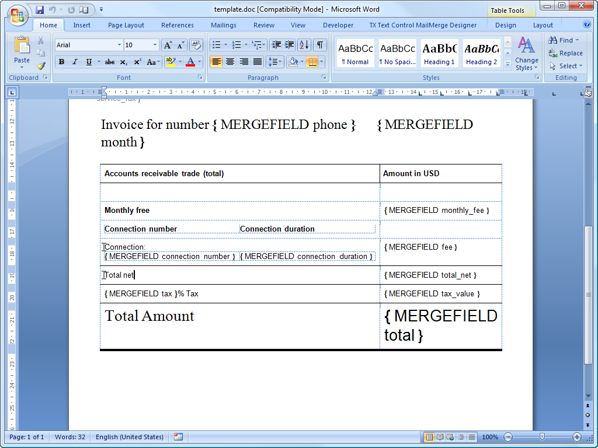
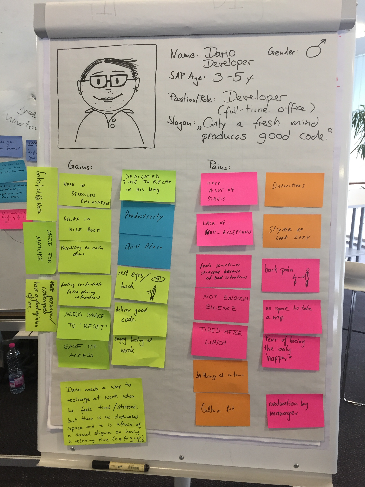

DESIGN THINKING
... w zespole scrumowym
- Kim jest czlowiek z ryba?
- Po co mi to?
- Jak powstają potwory?
- Design Thinking w pigułce
- Design Thinking w praktyce
- web developer
- scrum master
- Designer
- UI/UX expert

Scrum & Design Thinking
- Uzytkownik w centrum
- Iteracje - szybki feedback
- Skomplikowane problemy rozbite na małe kroki
- Fail fast (and cheap)
- Produkt końcowy jest niewiadomą
Ale nie zawsze tak bylo..
PO CO MI TO?


Jak powstają potwory?

"Dokumentacja"
- Szablony
- Szkielety
- Sz..pecifikacje
ROZBIEŻNOŚCI
BEZUŻYTECZNE


1.ZROZUMIEĆ UŻYTKOWNIKA


DEFINIOWANIE PROBLEMU
?